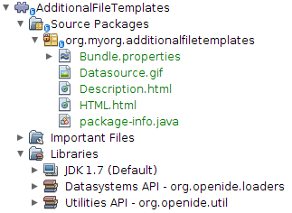
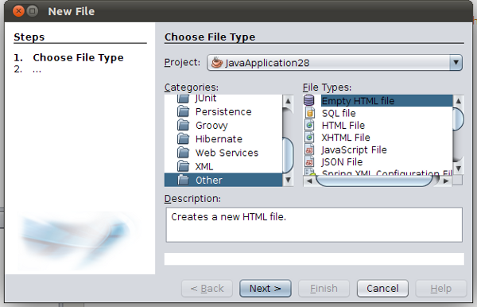
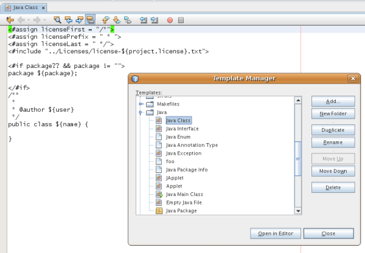

Apache NetBeans
Apache NetBeansLatest release
NetBeans File Template Module Tutorial
Last reviewed on 2023-02-25
This tutorial demonstrates how to create a NetBeans module providing file templates. Once your users have installed the module in the IDE, the file templates are available to them in the New File wizard. Sharing file templates is easy once you have a module that contains them—the IDE lets you create a binary that you can make available to others, who can then install it through the Plugin Manager.
A file template consists of a template file, an HTML description file, and an icon. The HTML description file displays information about the template in the New File wizard. The icon identifies the template and distinguishes it from other templates in the New File wizard. In this tutorial, you create a new file template by copying the content of an existing file template into an empty file. Then, once you have set up a description file for the New File wizard and a distinguishing icon, you register the template, the HTML description file, and the icon in the NetBeans configuration file, that is, in the layer.xml file.
For troubleshooting purposes, you are welcome to download the completed tutorial source code.
Introduction to FreeMarker
Since NetBeans IDE 6.0, you have been able to optionally use the FreeMarker template language to define your file templates. Several of the templates that are bundled with the IDE are defined in this way. For example, the Java class template is defined as follows:
<#assign licenseFirst = "/*">
<#assign licensePrefix = " * ">
<#assign licenseLast = " */">
<#include "../Licenses/license-${project.license}.txt">
<#if package?? && package != "">
package ${package};
</#if>
/**
*
* @author ${user}
*/
public class ${name} {
}The benefit of using FreeMarker can be seen in the template above, that is, you can add logic to your templates, via directives such as if/elseif/else and loop constructs. For a full description of FreeMarker template language, see the FreeMarker Manual, in particular, the Directives chapter. In this tutorial, you will be shown, among other things, the steps you need to take to incorporate FreeMarker into your file templates.
Creating the Module Project
We begin by going through the New Module Project wizard, which will create a source structure, with all the minimum requirements, for our new module.
-
Choose File > New Project (Ctrl+Shift+N). Under Categories, select NetBeans Modules. Under Projects, select Module. Click Next.
-
In the Name and Location panel, type
AdditionalFileTemplatesin the Project Name field. Change the Project Location to any directory on your computer. Click Next.
-
In the Basic Module Configuration panel, type
org.myorg.additionalfiletemplatesin Code Name Base. Click Finish.
The IDE creates the AdditionalFileTemplates project. The project contains all of your sources and project metadata, such as the project’s Ant build script. The project opens in the IDE. You can view its logical structure in the Projects window (Ctrl-1) and its file structure in the Files window (Ctrl-2).
Creating the File Template
A file template consists of a template file, an HTML description file, and an icon. An easy way to create a new file template is to copy the content of an existing file template into an empty file. Then, once you have set up a description file for the New File wizard and a distinguishing icon, you are ready to register the template in the layer.xml file.
Creating the Template File
The template file defines the content that the template will generate for the user.
-
Right-click the
AdditionalFileTemplatesnode and choose New > Other. In the New File wizard, under Categories, choose Other and under File Types, choose HTML. Click Next.
-
Type
HTMLin File Name. Click Browse and browse tosrc/org/myorg/additionalfiletemplates. Click Select Folder. Click Finish. A new HTML file, namedHTML.html, opens in the Source Editor, containing the standard HTML file’s content shown below:
<!DOCTYPE html>
<html>
<head>
<title></title>
<meta http-equiv="Content-Type" content="text/html; charset=UTF-8">
</head>
<body>
TODO write content
</body>
</html>-
Change the HTML file according to your needs. You can add the following predefined variables, if needed:
-
${date} inserts the current date, in this format: Feb 16, 2008
-
${encoding} inserts the default encoding, such as: UTF-8
-
${name} inserts the name of the file.
-
${nameAndExt} inserts the name of the file, together with its extension.
-
${package} inserts the name of the package where the file is created.
-
${time} inserts the current time, in this format: 7:37:58 PM
-
${user} inserts the user name.
-
Your users will be able to set values for these variables in the Template Manager, which is under the Tools menu. There, they will click the Settings button and a file named user.properties will open in the Source Editor. In this file, users can set the above values, to override those provided by default. Typically, however, they will not do this, because the default values of the above variables will do the job fine.
|
In addition to the predefined variables, you can provide additional variables to your users, via your module. This is explained later in this tutorial. The full list of FreeMarker directives can also be used to add logic to the template:
-
#assign
-
#else
-
#elseif
-
#end
-
#foreach
-
#if
-
#include
-
#list
-
#macro
-
#parse
-
#set
-
#stop
As an example, look at the definition of the Java class template:
<#assign licenseFirst = "/*">
<#assign licensePrefix = " * ">
<#assign licenseLast = " */">
<#include "../Licenses/license-${project.license}.txt">
<#if package?? && package != "">
package ${package};
</#if>
/**
*
* @author ${user}
*/
public class ${name} {
}For information on the #assign directive, see Providing a Project License. For a full description of FreeMarker template language, see the FreeMarker Manual, in particular, the Directives chapter.
Creating the Description File
The description file is an HTML file displayed in the New File dialog for the template.
-
Right-click the
org.myorg.additionalfiletemplatesnode and choose New > Other. Under Categories, choose Other. Under File Types, choose HTML File. Click Next. TypeDescriptionin File Name. Click Browse and browse tosrc/org/myorg/additionalfiletemplates. Click Select Folder. Click Finish. An empty HTML file opens in the Source Editor and its node appears in the Projects window.
-
Type "
Creates a new HTML file." (without the quotation marks) between the<body>tags, so that the file looks as follows:
<!DOCTYPE html>
<html>
<head>
<title></title>
<meta http-equiv="Content-Type" content="text/html; charset=UTF-8">
</head>
<body>
Creates a new HTML file.
</body>
</html>Getting an Icon
The icon accompanies the file template in the New File wizard. It identifies it and distinguishes it from other file templates. The icon must have a dimension of 16x16 pixels.
-
Name the icon, for example,
icon.png. Below, the name "Datasource.gif" is used.
-
Paste it in the
org.myorg.additionalfiletemplatespackage.
Registering the File Template
Once you have defined the file template, the description file, and the icon, you register them in the NetBeans virtual filesystem. The layer.xml file is made for this purpose. The file is automatically created and populated via the @TemplateRegistration annotation used in the steps below.
-
Right-click the module in the Projects window, choose Properties, and use the Libraries tab to add dependencies on File Templates and Base Utilities API.
-
Right-click the
org.myorg.additionalfiletemplatesnode and choose New > Other. Under Categories, choose Java. Under File Types, choose Java Package Info. Click Next. Click Finish. A Java class namedpackage-info.javais created. Redefine its content as follows:
@TemplateRegistration(
folder = "Other",
iconBase="org/myorg/additionalfiletemplates/Datasource.gif",
displayName = "#HTMLtemplate_displayName",
content = "HTML.html",
description = "Description.html",
scriptEngine="freemarker")
@Messages(value = "HTMLtemplate_displayName=Empty HTML file")
package org.myorg.additionalfiletemplates;
import org.netbeans.api.templates.TemplateRegistration;
import org.openide.util.NbBundle.Messages;-
Make sure that the structure of the module is as follows:

Building and Installing the Module
The IDE uses an Ant build script to build and install your module. The build script is created for you when you create the module project.
-
In the Projects window, right-click the project and choose Run. The module is built and installed in a new instance of the development IDE.
-
Choose File > New Project (Ctrl-Shift-N) and create a new project.
-
Right-click the project and choose New > Other. The New File dialog opens and displays the new file template. It should look something like this, although your icon will probably be different:

-
Select the new file template and complete the wizard. When you click Finish, the Source Editor displays the newly created template.
Providing Additional Variables
As discussed earlier, you can supplement predefined variables such as ${user} and ${time}, with your own. For example, you can define your template like this, if you want to pass in a variable representing a list of names:
<!DOCTYPE HTML PUBLIC "-//W3C//DTD HTML 4.01 Transitional//EN">
<html>
<head>
<title></title>
</head>
<body>
<#list names as oneName>
<b>${oneName}</b>
</#list>
</body>
</html>Above, the FreeMarker #list directive iterates through a variable called "names", with each instance being called "oneName". Each value of the iteration is then printed in the file, between bold tags. The value of "names" could come from a variety of places, typically from a wizard panel, where the user, in this case, would have selected a set of names from a list.
To enable the above, that is, to iterate through a new variable, see FreeMarker in NetBeans IDE 6.0: First Scenario and then see the discussion of DataObject.createFromTemplate(df, targetName, hashMap) in this blog entry.
Providing a Project License
One point that has not been discussed yet relates to the FreeMarker #assign directive, which is only relevant if you are interested in enabling the user to generate a project license when the file is created. To cater to your user’s licensing needs, you can provide licensing directives in the file template. Then all files within the user’s project will be created with the licensing directives that you have provided.
To make sense of this, take the following steps:
-
Go to the Tools menu. Choose Templates. Open the Java | Java Class template in the editor:

-
The template above, and the ramifications of defining it in FreeMarker, have been discussed above. However, let’s look specifically at the first four lines:
<#assign licenseFirst = "/*">
<#assign licensePrefix = " * ">
<#assign licenseLast = " */">
<#include "../Licenses/license-${project.license}.txt">These four lines have to do with licensing. The last line determines the license that will be used, per project. The first three determine the characters in front of and behind each line in the license. Above are the four lines for Java source files. Here is the same set of definitions that you will find at the start of the Properties file template:
<#assign licensePrefix = "# ">
<#include "../Licenses/license-${project.license}.txt">The first line tells us that each line in the license will be prefixed with a "# ", instead of with a "", which is the prefix for Java source files (with "/" for the first line and " */" for the last line). To verify this, create a Java source file and then create a Properties file. You will see a license in both cases. However, the characters prefixing and postfixing each line is different, because of the above definitions.
-
Next, let’s look at the license itself. Notice this line in the templates above:
<#include "../Licenses/license-${project.license}.txt">In particular, notice this part:
${project.license}Put that, as a key, in your application’s nbproject/project.properties file. Now add a value. For example:
project.license=apacheNow look in the Template Manager again, in the Licenses folder. You see some templates there. Create a new one called " license-apache.txt ". For now, you can just copy an existing one and paste it in the same category in the Template Manager. Then, next time that you create a file that is defined by a FreeMarker template that includes this line:
<#include "../Licenses/license-${project.license}.txt">…you will have the specified license embedded within the newly created file.
In summary, since NetBeans IDE 6.0, you are able to let the user define, per project, the license that each of its files should display. Plus, imagine if the user needs to create a new project with a different license. Assuming the user has a set of licenses defined in the Template Manager, using a new license is as simple as adding that one key/value pair to the nbproject/project.properties file. That was not possible before but, thanks to FreeMarker support, is possible now. For further reading about licensing, especially the comments at the end of it, see this blog entry.
Next Steps
For more information about creating and developing NetBeans Module, see the following resources: